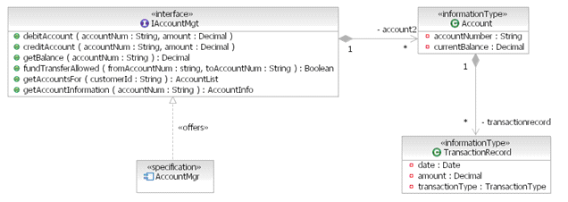
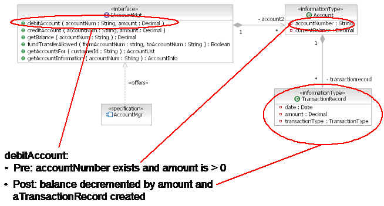

| Guideline: Managing Data With Components |
 |
|
| Related Elements |
|---|
Typical project teams perform component modeling and data modeling as separate tasks. This may lead to a mismatch
between the dynamic or "in-flight" data that components require (state) and the underlying data stores that make that
data persistent. This technique shows a way of tying together these two separate concerns.
One of the key elements of object-oriented design is that of encapsulation, or information hiding, whereby an object
binds its state and its behavior together and hides them from clients that use that object. Encapsulation is the
process of hiding all of the details of an object that do not contain its essential characteristics. [BOOCH91] Components, and increasingly services, adopt the same principle of encapsulation. A component is a modular unit of functionality, accessed through one or more interfaces that encapsulate its own state and behavior. [ADS02]
In practice, two issues often arise when defining encapsulated components:
The challenge is how to join components with the underlying databases where persistent data and state is stored.
The technique described here offers an approach for addressing this challenge, based on the work of Cheesman and
Daniels [CHEESMAN00]. This approach may also be appropriate for services [DODD05].
Step 1: Produce a logical data model showing business entities
Produce a logical data model (LDM) showing business entities and the relationship between the entities in your system.
Figure 2 shows an example of a partial LDM for a banking application.
In this particular example, the LDM is drawn using components from UML2 with the stereotype <<entity>>.
Entity components model data only and do not have any associated behavior.
Figure 2: Logical Data Model Step 2: Identify core business entities
Identify core entities to determine which data depends on other data and which is stand-alone. [CHEESMAN00]
A core business entity is an one that:
In the example shown in Figure 3 'Account' and 'Customer' are core because they could exist independently whereas
'TransactionRecord' and 'SecurityProfile' are not stand alone, they depend on 'Account' and 'Customer' respectively.
'Bank' could be a core business type, but it is not within the scope of problem space of this solution.
Figure 3: Core Business Entities
As a rule, create one business interface for each core entity type. Use a naming convention of the form 'IMgt', for
example 'IAccountMgt', indicating the interface manages instances of this type.
An Interface Responsibility Diagram is a UML2 component diagram that shows the information managed by each interface
and dependencies between interfaces and entities. Each entity should be owned by exactly one interface. Show allocation
of entities to interfaces using a UML2 association. Figure 4 shows an example Interface Responsibility Diagram. In this
example, you assign interfaces to the core types 'Account' and 'Customer'.
Figure 4: Interface Responsibility Diagram
Step 4: Specify the information to be managed by an interface
The Interface Responsibility Diagram (Figure 4 above) shows an association between interfaces and entities from the
LDM. It does not show information or state that the components manage through the interfaces; an Interface
Specification Diagram shows this information.
The Interface Specification Diagram shows the possible states of a component to which the operations can refer. All
changes to the state of a component caused by a given operation can be described in this information model. Showing
states in this way also allows you to specify pre- and post-conditions, which may affect that state.
Figure 5: Interface Responsibility Diagram
For each operation in the interface, specify the data it needs to pass and return. Assign the typed parameters and
returns to the operation. Capture this information on an Interface Specification Diagram, illustrated for the
IAccountMgt interface in Figure 6.  Figure 6: Interface Specification Diagram
Unlike an Interface Responsibility Diagram that shows a mapping between components, interfaces and persistent entities,
an Interface Specification Diagram shows a mapping between components, interfaces and the state those components have
at runtime.
Represent this state using the stereotype <<informationType>>. Information types correspond to dynamic or
"in-flight" data. They are not the same as persistent data, even though they usually map to that data. Generally, an
entity maps to a relational database table or some other persistence mechanism, whereas an informationType is a view of
an underlying persistent entity. There may be several such "views," each managed by different components.
Convert the Interface Responsibility Diagram of Figure 5 to the Interface Specification Diagram of Figure 6 by removing
any attributes not required. The end result is that each operation in the interface contains only data types of the
information types managed through that interface.
In Figure 6 the operation 'getBalance' has a parameter 'accountNum' of type 'String' and a return type of 'String'. The
parameters 'accountNumber' and 'currentBalance' store the information in 'Account'.
Pre- and post-conditions are kinds of an assertion. They are false only if an error has occurred. You should usually
check assertions only during build (either automatically during compilation or manually during test), not during
runtime execution.
Having a pre-condition makes it explicit what the caller is responsible for checking. Without this explicit statement
of responsibility, there could be too little or too much checking. Too much checking is as bad as too little because it
leads to "program bloat" and makes programs overly complex and difficult to maintain.
A pre-condition does not stop an operation from executing [MEYER97]. Some practitioners erroneously use the term
pre-condition to describe a situation that needs to be true in order for an operation to be executed. This is better
termed a guard condition or the triggering event for execution. [DODD05].
At run time, treat pre- and post-conditions as written specifications for how the system should behave. You can then
test them during the various phases of testing. However, you can also check assertions at run time using some form of
exception handling.
Figure 7 shows an example of a pre- and post-condition written using English for an operation in the 'IAccountMgt'
interface. You may write pre- and post-conditions more formally using the Object Constraint Language (OCL)
[WARMER99].  Figure 7: Pre- and Post- Conditions See Patterns of Enterprise Application Architecture, by Martin Fowler, for more information about mapping between objects and relational databases.
References |


|
[ADS02] |
Kahan, Ed et al. Architecture Description Standard Overview , IBM, 2002. |
|
[BOOCH91] |
Booch, Grady. Object-Oriented Design with Applications , Benjamin Cummings, 1991, ISBN: 0-8053-0091-0. |
|
[CHEESMAN00] |
Cheesman, John & Daniels, John. UML Components , Addison-Wesley, 2000, ISBN: 0201708510. |
|
[DODD05] |
Dodd, John. Practical Service Specification and Design Part 3: Specifying Services, CBDi Journal, June 2005. |
|
[MEYER97] |
Meyer, Bertrand. Object-Oriented Software Construction , Prentice-Hall, 1997, ISBN: 0136291554. |
|
[WARMER99] |
Warmer, J and Klepp, A. The Object Constraint Language - Precise Modeling with UML , Addison Wesley, 1999, ISBN: 0201379406. |
| Concepts |
|---|
Licensed Materials - Property of IBM |